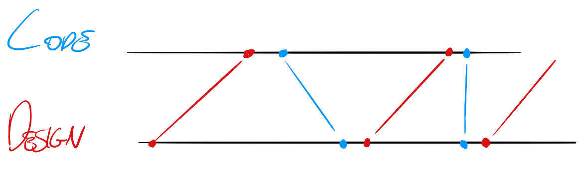
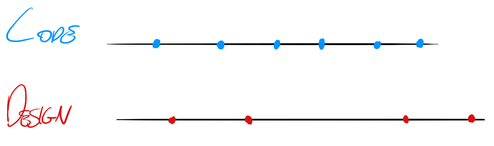

FontIcons
a workflow inSided story
Who I am?
FrontEnd Developer ~ at inSided
Passioned Developer ~ in Life
OpenSource Contributor ~ in Free Time
This is not a talk about:
- Iconography
- Fonts
- and not, not even Web Fonts ... not generally ...
Web Font Icons
and Why you should start to use it!
(if you don't yet)
- They are scalable (so no x2 <img> for Retina Display)
- They are mobile compatible
- They are compatible with IE 7 >
- They can change color
- Implicit traffic gain on reducing http requests
- ... And of course a lot of open (or free) resources
- But most important for us, they can be generated
But how to generate Web Fonts?
- IcoMoon
- FontCustom
- Fontello
...A bit of inSided Workflow...
...A bit more in depth...

So I made a tool FontFabrique
actually, I am still working on it. :-P
... And I ask around to gather inspiration in how to build it...
I went to the designer, and I asked about using git...

... and I started to look for alternatives ...
versioning with UI and OS integration?
Oh wait... already exist, Why not Dropbox?
So I went to the Programmer.
and when I tell to use Dropbox in production:
No Serious? Why All this?
"Small problems in big scale, are not so small"
"Boyscouting, is continous improving" ~ an inSided Core Value
And I think:
"Automated Tools, without additional ui/cli, have no learning curve"
: = :
but for practical people:
- Small kb, we have only what we need
- Save up from 15 to 20min to generate fonts, everytime an icon is created, updated, deleted
- Code convention for developers, we can work with placeholders. So no waiting for fonts. ( Everybody is happy )
- We supplement communication, and file transfer, from 15 to 20 min; with procedure.
- Git and assets, cause conflicts. Conflicts cause time loss, from 10min to 15min.
(building instr. !== builded file )
The Developer is happy, he can use his favorite version tool, without any price in setup.
if( env === 'production'){
<link href="<% font_url %>/myFontProject/10/icon.css" rel="stylesheet" />
}else if( env === 'staging' ) {
<link href="<% font_url %>/myFontProject/11/icon.css" rel="stylesheet" /
} else {
<link href="<% font_url %>/myFontProject/latest/icon.css" rel="stylesheet" /
}
And the Designer is happy too:
Not needed to:
- Learn, an additional tool
- Send icons to each developer
- ... or add them to a ticket
- No pressure for delivering an icon, since they don't block the workflow anymore.
Important in case the customer needs to approve
- Only one communication line to push the updated icons set to staging or production.
Conclusion
We split the responsibility and as a result we increase the speed and the quality

What next?
Implementing, deliver documentation and naming rule.
and add some features...
- Fonts Ligature and Spacing Configuration
- UTF Fall back (Gliphys)
- Sub folders for categories
- ...
- SpriteFabrique not just vectors, we pixel too...
Thanks
- to my friend Max, for contributing.
- to my colleagues, to be critic and constructive.
- to the OpenSource resources like: IcoMoon, FontCustom, Fontello.
- But most important, thanks for coming .
Let's keep in touch!
@ideabile - mauro@insided.nl
Questions?